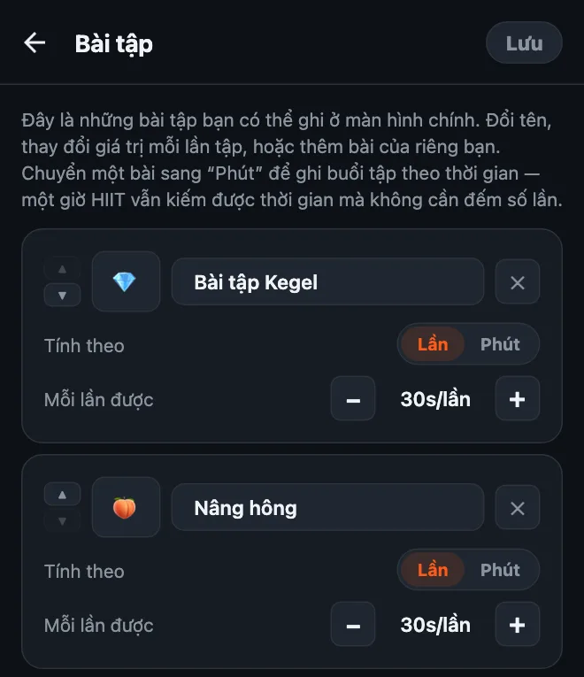
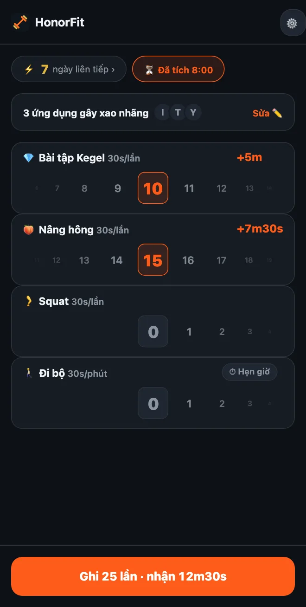

Tập kegel để mở khóa điện thoại
Chào mọi người! Mình làm HonorFit vì muốn có vài cái hít đất đứng chắn giữa mình và Instagram, mà không phải dựng điện thoại lên cho camera đếm (làm vậy ở cây xăng đúng là không phải khoảnh khắc đẹp nhất đời mình haha). Bạn tập, tự ghi số lần, và app được mở khóa.
Nhưng hít đất đâu phải gu của tất cả mọi người. Và một trong những lựa chọn hợp nhất với ý tưởng này lại chẳng phải hít đất: kegel và cầu mông. Đây là lý do, và cách thiết lập.
Vì sao kegel hợp với cơ chế tự giác đến vậy
Không ai nhìn thấy bạn tập kegel. Người ngồi cạnh trên xe buýt không thấy, đồng nghiệp không thấy, và camera điện thoại thì càng không. Một app đếm số lần bằng camera đơn giản là không thể đếm được bài này.
HonorFit cũng chẳng cố đếm. App chạy theo cơ chế tự giác: bạn tập, cuộn bánh xe tới số lần đã làm, xong. Vậy là bạn có thể kiếm thời gian lướt TikTok ngay trong cuộc họp, lúc xếp hàng ở siêu thị, hay khi nằm dài trên sofa, mà chẳng ai hay biết.
Nó còn giải quyết luôn câu ai cũng nói về kegel: “Biết là nên tập, mà cứ quên hoài.” Nếu mỗi ngày bạn cầm điện thoại lên cả chục lần (không phán xét đâu, mình cũng vậy), thì giờ lần nào cũng là một lời nhắc.
Cầu mông thì không vô hình, nhưng dễ tập trên sàn hay thậm chí trên giường, không cần dụng cụ, và đi cặp với kegel rất hợp.
Cách thiết lập
Từ phiên bản 1.15.0, phần này miễn phí: bạn có thể thêm tối đa 3 bài tập của riêng mình mà không cần Pro, và cả Kegel lẫn cầu mông đều là gợi ý thêm chỉ với một chạm. (Pro, $3 một tháng hoặc $19,99 trả một lần ở Mỹ, cho thêm không giới hạn; giá thay đổi theo quốc gia và đơn vị tiền tệ, và store sẽ hiện giá ở chỗ bạn.) Cách làm như sau:
- Chạm vào bánh răng ở màn hình chính, rồi chạm thẻ Bài tập.
- Chạm gợi ý Bài tập Kegel, rồi Nâng hông (cầu mông). Không cần gõ gì cả, và chúng có sẵn emoji riêng: 💎 cho kegel và, đúng vậy, 🍑 cho cầu mông.
- Chỉnh Mỗi lần được bằng nút −/+ (gợi ý của mình ở bên dưới).
- Xóa những bài bạn không dùng bằng nút ✕ (hít xà chẳng hạn?), rồi chạm Lưu.

Hướng dẫn đầy đủ về trình chỉnh sửa, kể cả buổi tập theo phút, nằm trong bài cách tùy chỉnh bài tập trong HonorFit.
Mỗi lần tập nên đổi được bao nhiêu thời gian?
Đây là mức mình sẽ bắt đầu:
| Bài tập | Mỗi lần được | Một hiệp thường được |
|---|---|---|
| 💎 Kegel | 30 giây | 10 lần kegel = 5 phút |
| 🍑 Cầu mông | 30 giây | 15 lần cầu mông = 7 phút 30 giây |
| 🚶 Đi bộ (theo phút) | 30 giây mỗi phút | Đi bộ 20 phút = 10 phút |
Vậy một hiệp 10 kegel cộng 15 cầu mông được khoảng 12 phút rưỡi. Rồi chỉnh dần từ đó. Nếu kiếm thời gian dễ quá, hạ giá trị xuống. Nếu bắt gặp mình ghi những lần chưa tập, nghĩa là giá đang quá cao, nên hạ xuống.

Một điều về kegel: tập nhiều hơn không có nghĩa là tốt hơn. Các trang sức khỏe như MedlinePlus và Cleveland Clinic thường nói về các hiệp khoảng 10 lần, vài lần mỗi ngày, và cho biết tập quá nhiều có thể khiến cơ bị căng quá mức. Nên đừng biến nó thành 100 cái kegel để đổi một tiếng YouTube nha! Vì vậy mình sẽ cho kegel một giá trị kha khá mỗi lần, và để cầu mông, squat hay đi bộ lo phần lớn hơn.
Các động tác cơ bản
Mình là dân làm app, không phải huấn luyện viên hay chuyên viên vật lý trị liệu, nên đây chỉ là ý chính thôi. Các link ở trên có hướng dẫn đầy đủ.
- Kegel: siết các cơ bạn dùng để nhịn tiểu, giữ vài giây, rồi thả lỏng hoàn toàn vài giây. Vậy là một lần. Nhớ thở đều, và cố đừng gồng bụng, đùi hay mông. (Dừng tiểu giữa chừng chỉ là cách để tìm ra đúng nhóm cơ một lần, không phải thứ để tập thường xuyên.)
- Cầu mông: nằm ngửa, co gối, bàn chân đặt phẳng trên sàn. Siết mông và nâng hông lên tới khi người thành một đường thẳng từ vai tới gối, dừng một chút, rồi hạ xuống từ từ. Vậy là một lần. Có người thích kết hợp một cái kegel ở điểm cao nhất.
Nếu bạn đang mang thai, mới sinh, bị đau vùng chậu, hoặc tập kegel thấy đau, hãy hỏi bác sĩ hoặc chuyên viên vật lý trị liệu sàn chậu trước. Họ sẽ cho bạn biết điều gì phù hợp với cơ thể bạn, và đôi khi câu trả lời là “giờ chưa nên tập kegel”, cũng không sao cả. Bạn có thể thiết lập HonorFit với bất cứ bài nào họ khuyên thay vào đó.
Vài mẹo nhỏ
- Giữ ba hoặc bốn bài. Kiểu như Kegel, Cầu mông, Squat và Đi bộ là đủ cho lúc ngồi, lúc nằm và lúc ra ngoài. Mỗi bài có một bánh xe riêng, nên ít bài thì dễ dùng hơn.
- Dùng buổi tập theo phút cho những ngày bạn ra ngoài. Chuyển một bài sang Phút (hoặc chạm gợi ý Đi bộ hay Yoga) để đi bộ hay đi lớp tập cũng đổi được thời gian.
- Bài tập mẫu đã lưu (Pro, bật trong Cài đặt) cho bạn lưu tối đa 3 tổ hợp lần tập, kiểu “10 kegel + 15 cầu mông”, và áp dụng lại chỉ với một chạm.
- Chặn một hai app thôi, đừng chặn hết. App nào đang ngốn hết buổi tối của bạn thì chặn app đó.
Nếu kegel cũng không phải gu của bạn, mình có viết về các lựa chọn nhẹ nhàng, tập được ngay tại bàn làm việc nữa.
HonorFit Blocker là app chặn ứng dụng miễn phí cho iPhone và Android. Cơ chế tự giác, không camera, không có gì rời khỏi điện thoại của bạn. Kegel, cầu mông và tối đa 3 bài tập tùy chỉnh đều miễn phí. Biết đâu vài bạn sẽ thích nó!